Pornography & Sex Work
Selling sex and selling fantasy — what the research really says about two of the most stigmatized corners of human sexuality.
People have traded sex for money, goods, and shelter for as long as there have been records to describe it. Sex work has commonly been called the “oldest profession.” People have also been making sexual imagery for thousands of years. Some of our earliest cave paintings and sculptures are of voluptuous, nude figures. Whether these were “fertility idols” or simply forms of early pornography is up for debate.
In this chapter we look at both sex work and pornography. These are loaded topics. People on one side might condemn porn and sex work as sinful, filthy, and detrimental to society. Those on the other side celebrate the artistry and sheer force of life found in both. Throughout this chapter, I’ll do my best to keep to the data. Whatever your views on sex work, my hope is that you’ll learn more about its prevalence, its effects, and the human beings involved.
15.1 Pornography: What It Is and How It Is Made
PornographyPornographyMedia — photographs, video, writing, drawing, painting, or sculpture — created mainly to cause sexual arousal.View in glossary → (porn) is media created to cause sexual arousal. It can take almost any form: photography, video, writing, drawing, painting, sculpture. A closely related word is eroticaEroticaSexual material that also aims for artistic or literary value — telling a story or evoking feeling — rather than only prompting arousal. The line between erotica and pornography is largely a matter of opinion.View in glossary →, which usually refers to sexual material that also aims for artistic or literary value. Erotica tells a story and tries to evoke feelings other than simply lust. The line between the two is blurry and mostly a matter of opinion. Erotica has hit the mainstream, with the novel Fifty Shades of Grey selling more than 100,000,000 copies and marketed as a mainstream book.
A novel contains explicit sex scenes but also tells a story and explores the characters’ feelings. This material would most likely be called:
Porn vs. “Obscenity”
For most of U.S. history, the real legal question was not “is this porn?” but “is this obscene?” ObscenityObscenitySexual material judged so offensive that it falls outside the free-speech protection of the First Amendment. Very little adult pornography actually meets this legal definition.View in glossary → is classified as sexual material so offensive that it falls outside the free-speech protection of the First Amendment. This line has been nearly impossible to define since its inception, and it’s only gotten murkier over time.
Early on, the Comstock Act of 1873 criminalized sending “obscene” material through the mail. This law was also used to arrest anyone who sent information out about contraception or homosexuality (Comstock Act, 1873)ReferenceComstock Act, ch. 258, 17 Stat. 598 (1873).. In a famous 1964 case, Justice Potter Stewart admitted he could not precisely define hard-core pornography but added, “I know it when I see it” (Jacobellis v. Ohio, 1964)ReferenceJacobellis v. Ohio, 378 U.S. 184 (1964).. That line is often quoted precisely because it captures how slippery the category is.
The Supreme Court finally settled on a working standard in Miller v. California (1973). Under what became known as the Miller testMiller TestThe three-part U.S. Supreme Court standard (from Miller v. California, 1973) for deciding whether sexual material is legally obscene: it must appeal mainly to a shameful interest in sex, depict sexual conduct in a patently offensive way, and, taken as a whole, lack serious literary, artistic, political, or scientific value.View in glossary →, material can be treated as obscene only if all three of the following are true (Miller v. California, 1973)ReferenceMiller v. California, 413 U.S. 15 (1973).:
- An average person, applying community standardsCommunity StandardsThe idea, central to the Miller obscenity test, that whether material is “patently offensive” is judged by the norms of an average person in a particular community — norms that vary by place and time.View in glossary →, would find that it appeals mainly to a shameful or morbid interest in sex.
- It depicts sexual conduct in a patently offensive way.
- It lacks serious literary, artistic, political, or scientific value.
Of course, this hardly makes things any clearer. What is considered “shameful or morbid” in one culture wouldn’t be considered as such in another. Within some early puritan societies, it was considered indecent to kiss with tongues (Jankowiak et al., 2015)ReferenceJankowiak, W. R., Volsche, S. L., & Garcia, J. R. (2015). Is the romantic–sexual kiss a near human universal? American Anthropologist, 117(3), 535–539.. And who is to say what has literary, artistic, or political value? The book Lolita is seen by some as an unredeemable book about the seduction and sexual abuse of an underage girl. Others call it one of the greatest stories ever written due to Nabokov’s extraordinary prose and its psychologically complex characters.
In today’s world, most pornography made by and for consenting adults is legal in the United States, protected as free speech. Only narrow categories fall outside that protection, such as sexual depictions of a minor.
Why is the “community standards” part of the Miller test hard to apply today?
How Big Is Porn, and Who Watches It?
Pornography is one of the most consumed products on the internet. Estimates of its revenue vary widely because the industry takes so many forms, but U.S. porn revenue has been reported in the range of $12 billion a year (CNBC.com, 2015)ReferenceCNBC.com. (2015, January 20). Things are looking up in America’s porn industry.. This has been increasingly driven by advertising rather than direct sales.
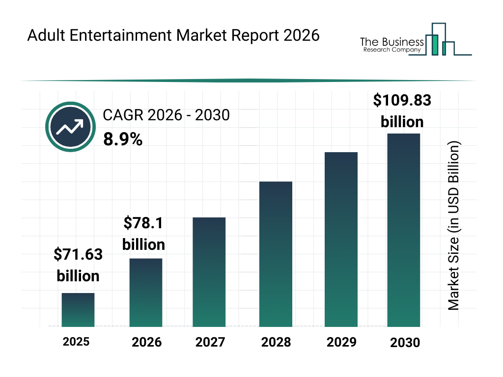
A sample of nearly 1,400 U.S. adults (ages 18–73) found that 91.5% of men and 60.2% of women reported consuming pornography or erotica in the past month (Solano et al., 2020)ReferenceSolano, I., Eaton, N. R., & O’Leary, K. D. (2020). Pornography consumption, modality and function in a large internet sample. The Journal of Sex Research, 57(1), 92–103.. Lifetime figures for the same sample were 98.9% of men and 91.9% of women. In other words, virtually everyone views porn in some form at some point in their life, and for most people it’s a regular occurrence. Porn use usually begins before adulthood, with a large study of U.S. teens finding that 73% had watched porn by the time they were 17 (Herbenick et al., 2020)ReferenceHerbenick, D., Fu, T., Wright, P., Paul, B., Gradus, R., Bauer, J., & Jones, R. (2020). Diverse sexual behaviors and pornography use: Findings from a nationally representative probability survey of Americans aged 18 to 60 years. The Journal of Sexual Medicine, 17(4), 623–633.. Around 15% of respondents reported they had seen porn by age 10.
The way porn reaches people has changed constantly with technology. The magazine Playboy, founded in 1953, was selling about 7 million copies a month by the early 1970s. It was “soft-core,” showing nudity but not explicit sex. Later magazines, like Hustler and Penthouse, went hard-core, showing full penetration. The 1980s saw an explosion of porn video reaching homes across the U.S., with the widespread adoption of VHS. In fact, pornography is often cited as one of the reasons why VHS technology took off so rapidly (Alilunas, 2016)ReferenceAlilunas, P. (2016). Smutty little movies: The creation and regulation of adult video. University of California Press..
Then the internet changed everything, making endless, free pornography available instantly. Sites such as Pornhub made streaming the norm. WebcammingWebcammingPerforming sex acts live on camera for paying viewers over the internet — a form of work that sits between pornography and in-person sex work.View in glossary → sites, such as OnlyFans, have blurred the line between porn and sex work, with subscribers seeing sex live-streamed from people who can take requests live. Many porn creators sell photos and videos directly to their audience, some of them even selling their used underwear (Morris, 2020)ReferenceMorris, S. (2020, July 23). What is OnlyFans, who uses it and how does it work? Newsweek.. Many traditional sex workers have moved to these platforms because they can work from home, on their own schedule, and keep more of what they earn (Rabouin, 2016)ReferenceRabouin, D. (2016, January 16). Camming gives internet porn fans a personal touch. Newsweek..
Which change best describes how technology has reshaped pornography over time?
15.2 The Effects of Pornography
In 2016, the Utah legislature became the first in the country to formally declare pornography a public-health hazard (S.C.R. 9, 2016)ReferenceS.C.R. 9, Concurrent Resolution on the Public Health Crisis, 2016 Gen. Sess. (Utah 2016)., and anti-porn writers such as Gail Dines argue that mainstream porn warps how people think about sex, intimacy, and gender (Dines, 2011)ReferenceDines, G. (2011). Pornland: How porn has hijacked our sexuality (1st ed.). Beacon Press.. However, many researchers argue that the “porn causes harm” story rests more on moral discomfort than on solid data. What’s more, it’s clear that porn also has real, measurable benefits for many. So, what’s the truth about how porn affects people?
Is Porn Use “Problematic”?
Most people who use porn use it in ordinary, untroubled ways. One widely cited study sorted online porn users into three profiles (Vaillancourt-Morel et al., 2017)ReferenceVaillancourt-Morel, M.-P., Blais-Lecours, S., Labadie, C., Bergeron, S., Sabourin, S., & Godbout, N. (2017). Profiles of cyberpornography use and sexual well-being in adults. The Journal of Sexual Medicine, 14(1), 78–85.:
- Recreational users, who use it occasionally and report no distress and generally good sexual well-being. This group constitutes around 75% of users.
- A distressed, non-compulsive group, who use porn relatively little but feel bad about it. These individuals are typically highly religious and see porn as sinful, but still view it occasionally.
- A compulsive group, who view porn much more than average, often daily. This group made up less than 10% of the sample and were primarily men who displayed mental-health issues, such as depression and anxiety.
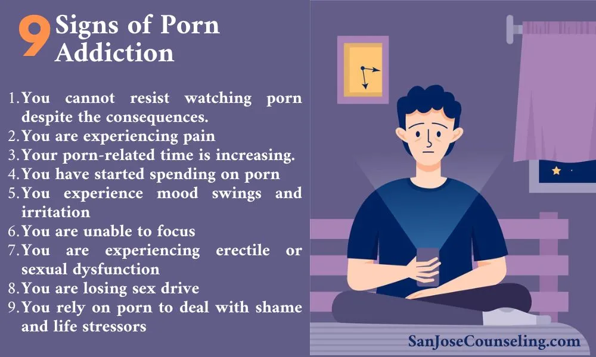
Research shows that porn is non-problematic for the vast majority of viewers, but there is a small yet significant number of people who display problematic pornography useProblematic Pornography UseA pattern of porn use that a person feels is out of their control and that interferes with their life. Evidence suggests distress and poor mental health more often drive heavy use than the reverse.View in glossary → (PPU). The psychological community has not classified this as a formal addiction, as there isn’t clear evidence it affects the brain in the way other addictions do (Ley et al., 2014)ReferenceLey, D., Prause, N., & Finn, P. (2014). The emperor has no clothes: A review of the “pornography addiction” model. Current Sexual Health Reports, 6(2), 94–105.. People who display PPU tend to use porn as an escape from other problems in their lives (Poulsen et al., 2013)ReferencePoulsen, F. O., Busby, D. M., & Galovan, A. M. (2013). Pornography use: Who uses it and how it is associated with couple outcomes. Journal of Sex Research, 50(1), 72–83.. In other words, it’s not that porn causes problems for people in and of itself, but, for some, it can be tied with impulsive-use disorders more broadly (similar to gambling or online gaming).
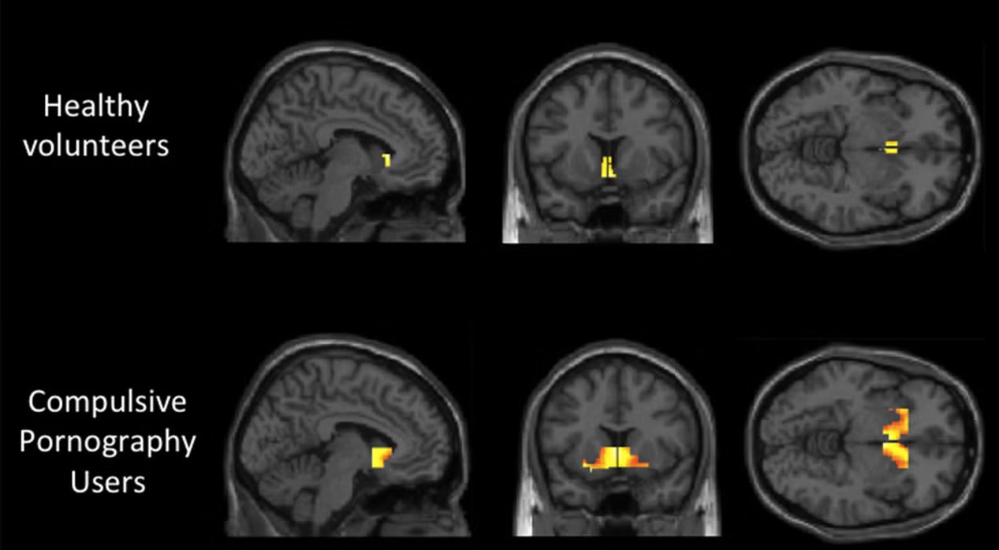
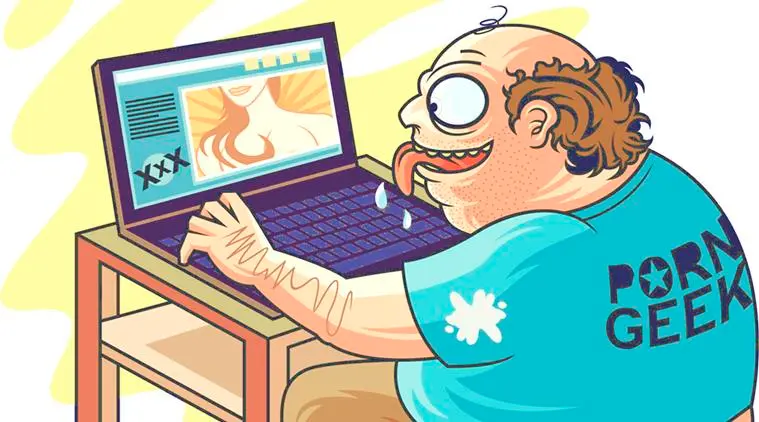
Kyle watches less porn than most men his age, yet he calls himself a porn addict. This pattern is best explained by:
When people are asked why they watch porn, the most commonly cited reason (for both women and men) is simply to become aroused and masturbate (Solano et al., 2020)ReferenceSolano, I., Eaton, N. R., & O’Leary, K. D. (2020). Pornography consumption, modality and function in a large internet sample. The Journal of Sex Research, 57(1), 92–103.. As discussed earlier in this book, masturbation is a normal and healthy behavior. Other commonly cited reasons for watching porn include learning about sexual techniques and adding variety to one’s own sex life. On the whole, the vast majority of people who view porn do so for healthy reasons (Hald & Malamuth, 2008)ReferenceHald, G. M., & Malamuth, N. M. (2008). Self-perceived effects of pornography consumption. Archives of Sexual Behavior, 37(4), 614–625..
Porn may be particularly advantageous for couples. Research shows that couples who watch pornography together tend to have more satisfying sex lives (Maddox et al., 2009)ReferenceMaddox, A. M., Rhoades, G. K., & Markman, H. J. (2009). Viewing sexually-explicit materials alone or together: Associations with relationship quality. Archives of Sexual Behavior, 40(2), 441–448.. When couples watch porn together, they tend to communicate more about sex, sharing their interests, preferences, and values (Kohut et al., 2018)ReferenceKohut, T., Balzarini, R. N., Fisher, W. A., & Campbell, L. (2018). Pornography’s associations with open sexual communication and relationship closeness vary as a function of dyadic patterns of pornography use within heterosexual relationships. Journal of Social and Personal Relationships, 35(4), 655–676.. This leads to greater openness and closeness between sexual partners. When two partners have different levels of sexual desire, porn can offer one partner a consensual outlet without pressuring the other (Rodrigues et al., 2021; Perry, 2017)ReferencesRodrigues, D. L., Lopes, D., Dawson, K., de Visser, R., & Štulhofer, A. (2021). With or without you: Associations between frequency of internet pornography use and sexual relationship outcomes for (non)consensual (non)monogamous individuals. Archives of Sexual Behavior, 50(4), 1491–1504.
Perry, S. L. (2017). Does viewing pornography reduce marital quality over time? Evidence from longitudinal data. Archives of Sexual Behavior, 46(2), 549–559.. When porn is used to increase communication and satisfaction in a relationship, it can have significant, positive benefits.
Pornography Is Fiction, Not Fact
Porn is produced. It is staged, scripted, cast, lit, and edited, just the same as any other film. And yet, many people (especially young men) view porn as a realistic view of sex. This can lead to misunderstandings about how sex works in the real world. For example, here are some things you rarely see in porn (Bridges et al., 2010; Willis et al., 2020)ReferencesBridges, A. J., Wosnitzer, R., Scharrer, E., Sun, C., & Liberman, R. (2010). Aggression and sexual behavior in best-selling pornography videos: A content analysis update. Violence Against Women, 16(10), 1065–1085.
Willis, M., Canan, S. N., Jozkowski, K. N., & Bridges, A. J. (2020). Sexual consent communication in best-selling pornography films: A content analysis. The Journal of Sex Research, 57(1), 52–63.:
- Romance and verbal affection
- Clear consent before engaging in sex
- Negotiation about what type of sex to have, where, and for how long
- Verbal instructions during sex, such as how to maximize pleasure (“A little to the left. Oh ya, right there!”)
- Checking in with a partner (“How do you like that? Does that feel good?”)
- Using condoms or other forms of contraceptives
Real-life sex should regularly feature consent, communication, and contraceptives, but these aspects (apparently) don’t make for a highly viewed porn video. This isn’t problematic in itself, but it does present issues for people who take porn as a documentary source for how sex should be.

Each of the following is rarely shown in mainstream porn EXCEPT:
For some men, viewing porn does result in less sexual satisfaction, both for themselves and their partners. A study by Kuan and colleagues (2022) found that men who rate viewing porn “often” or “very often” tend to rate their own sex as less satisfying than men who view porn “sometimes” or “regularly” (Kuan et al., 2022)ReferenceKuan, H. T., Senn, C. Y., & Garcia, D. M. (2022). The role of discrepancies between online pornography-created ideals and actual sexual relationships in heterosexual men’s sexual satisfaction and well-being. SAGE Open, 12(3).. What’s more, the sexual partners of men who viewed porn very often also rated their sex as less satisfying. Interestingly, this trend wasn’t found with women. In fact, women who reported viewing porn “often” or “very often” actually reported greater sexual satisfaction. These reverse trends show that porn doesn’t necessarily make real-life sex worse, but it can affect our expectations around sex (for better or for worse).
A study of young men, ages 18–24, found that 20% of them viewed porn as “realistic” and “most helpful” when it came to learning about sex. These men were more likely to perform more violent sex acts, such as slapping, gagging, and choking partners during sex. They also reported being less aroused by women with average breasts. When describing a woman who was raped, these men were more likely to blame the victim — agreeing with statements like, “She shouldn’t have put herself in that situation,” and “What she was wearing contributed to the incident.”
In short, when porn is viewed and used as a fantasy, it tends to have no harmful effects. But when porn is viewed as realistic and something to be imitated, it can lead to less satisfying sex and more misogynistic attitudes about women. This points to a larger point about porn, as well as any form of media. If it leads to unrealistic expectations about the world, media exposure can cause real problems. The solution likely isn’t to eliminate porn, but to educate people about it.
Growing Up With Porn
It’s becoming more common for children to see porn at earlier and earlier ages. Around 15% of young adults now report first seeing porn on the internet before the age of 10 (Herbenick et al., 2020)ReferenceHerbenick, D., Fu, T., Wright, P., Paul, B., Gradus, R., Bauer, J., & Jones, R. (2020). Diverse sexual behaviors and pornography use: Findings from a nationally representative probability survey of Americans aged 18 to 60 years. The Journal of Sexual Medicine, 17(4), 623–633.. Given that free porn is only a click away, it is more important than ever to educate young people about porn.
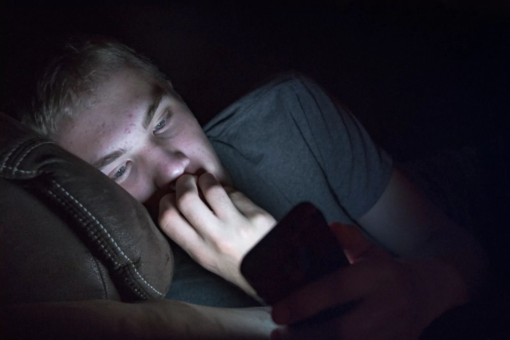
A fair number of teens report using porn as a stand-in for sex education (Leonhardt et al., 2018)ReferenceLeonhardt, N. D., Willoughby, B. J., Young-Petersen, B., & Leonhardt, D. (2018). Exploring trajectories of pornography use through adolescence and emerging adulthood. Journal of Sex Research, 55(3), 297–309.. That is worrying, given all the ways already discussed in which porn doesn’t portray sex realistically. This is why many sexual-health educators promote porn literacyPorn LiteracyAn educational approach that teaches young people to view pornography critically: as staged fantasy with unrealistic bodies and scripts that leave out communication, consent, and protection.View in glossary →. This involves teaching young people that porn is staged fantasy, that performers’ bodies are not typical, and that real sex involves communication, consent, and protection. The goal is not to shame young people who view porn, but to give them a framework for how to understand it.
It’s not yet well established whether early exposure to porn significantly affects people’s later sex lives or relationships (Pathmendra et al., 2023)ReferencePathmendra, P., Raggatt, M., Lim, M. S. C., Marino, J. L., & Skinner, S. R. (2023). Exposure to pornography and adolescent sexual behavior: Systematic review. Journal of Medical Internet Research, 25, e43116.. It has been found that teens who use porn consistently are more likely to have permissive attitudes toward sex, but it’s unclear whether porn causes these attitudes or if it’s the other way around (Pathmendra et al., 2023; Koletić, 2017)ReferencesPathmendra, P., Raggatt, M., Lim, M. S. C., Marino, J. L., & Skinner, S. R. (2023). Exposure to pornography and adolescent sexual behavior: Systematic review. Journal of Medical Internet Research, 25, e43116.
Koletić, G. (2017). Longitudinal associations between the use of sexually explicit material and adolescents’ attitudes and behaviors: A narrative review of studies. Journal of Adolescence, 57(1), 119–133.. Large-scale studies find that the vast majority of teens who view porn show no negative effects in their sexual function or relationship satisfaction (Dwulit & Rzymski, 2019)ReferenceDwulit, A. D., & Rzymski, P. (2019). Prevalence, patterns and self-perceived effects of pornography consumption in Polish university students: A cross-sectional study. International Journal of Environmental Research and Public Health, 16(10), 1861.. In fact, 1 in 4 students reported beneficial effects from viewing porn, such as being more sexually satisfied and having an easier time reaching climax during masturbation. But the age of onset may matter here. Young people who began viewing porn before the age of 12 were significantly more likely to report being dissatisfied with real-life sex and their relationships. It’s likely that children can be hurt by porn if they are exposed to it too early and without proper education.
Does Porn Cause Violence Against Women?
It’s no secret that porn often portrays violence toward women. A content analysis of highly viewed porn videos found that 88% of the scenes portrayed physical aggression toward women (e.g., spanking, gagging, slapping) and 49% contained verbal aggression (Bridges et al., 2010)ReferenceBridges, A. J., Wosnitzer, R., Scharrer, E., Sun, C., & Liberman, R. (2010). Aggression and sexual behavior in best-selling pornography videos: A content analysis update. Violence Against Women, 16(10), 1065–1085.. Larger analyses of free streaming sites found outright violence against women in 35–45% of scenes, including physical acts of violence (e.g., choking) and seemingly non-consensual sex (Fritz et al., 2020; Shor & Seida, 2019)ReferencesFritz, N., Malic, V., Paul, B., & Zhou, Y. (2020). A descriptive analysis of the types, targets, and relative frequency of aggression in mainstream pornography. Archives of Sexual Behavior, 49(8), 3041–3053.
Shor, E., & Seida, K. (2019). “Harder and harder”? Is mainstream pornography becoming increasingly violent and do viewers prefer violent content? The Journal of Sex Research, 56(1), 16–28..
Across studies, men who consume more porn do, as a group, show somewhat higher acceptance of violence against women (Hald et al., 2010; Skorska et al., 2018)ReferencesHald, G. M., Malamuth, N. M., & Yuen, C. (2010). Pornography and attitudes supporting violence against women: Revisiting the relationship in nonexperimental studies. Aggressive Behavior, 36(1), 14–20.
Skorska, M. N., Hodson, G., & Hoffarth, M. R. (2018). Experimental effects of degrading versus erotic pornography exposure in men on reactions toward women (objectification, sexism, discrimination). The Canadian Journal of Human Sexuality, 27(3), 261–276.. But “as a group” hides a crucial detail. The link is strong only for a narrow subset of men: those who watch a great deal of porn and already hold hostile attitudes toward women (Kingston et al., 2009)ReferenceKingston, D. A., Malamuth, N. M., Fedoroff, P., & Marshall, W. L. (2009). The importance of individual differences in pornography use: Theoretical perspectives and implications for treating sexual offenders. Journal of Sex Research, 46(2–3), 216–232.. In one lab experiment, men who watched violent porn were afterward more willing to behave aggressively toward a woman and more accepting of violence against women — but this effect held for only about 7% of participants (Hald & Malamuth, 2015)ReferenceHald, G. M., & Malamuth, N. M. (2015). Experimental effects of exposure to pornography: The moderating effect of personality and mediating effect of sexual arousal. Archives of Sexual Behavior, 44(1), 99–109.. This small fraction of men displayed high levels of hostility toward women before watching violent porn. In other words, porn does not appear to turn ordinary men into aggressors. Men already inclined toward hostility may seek out violent porn, further increasing their hostility over time.
Porn, in and of itself, doesn’t appear to lead people to become more violent against women. A large study of over 1,000 college students found that frequent porn viewers were no more likely to accept violence against women and were not more likely to misconstrue or confuse rape as consensual sex (Dawson et al., 2020)ReferenceDawson, K., Noone, C., Gabhainn, S. N., & MacNeela, P. (2020). Using vignette methodology to study comfort with consensual and nonconsensual depictions of pornography content. Psychology and Sexuality, 11(4), 293–314.. In fact, porn has likely led to less real-world violence against women.
At a population level, when porn becomes more available in a given country or region, sex crimes tend to decrease. Several studies of countries that liberalized access to porn, including Denmark, Japan, and the Czech Republic, found that reported sex crimes dropped after porn was made more available (Diamond, 2009; Diamond et al., 2011)ReferencesDiamond, M. (2009). Pornography, public acceptance and sex related crime: A review. International Journal of Law and Psychiatry, 32(5), 304–314.
Diamond, M., Jozifkova, E., & Weiss, P. (2011). Pornography and sex crimes in the Czech Republic. Archives of Sexual Behavior, 40(5), 1037–1043.. This is especially true for sex crimes involving children. This could be because porn can provide a “safe outlet” for some people who would otherwise be sexually dissatisfied and thus victimize others for their own satisfaction.
The link between porn use and accepting violence toward women is strongest among men who:
15.3 Sex Work and Sex Workers
Sex workSex WorkThe exchange of sexual activities or performances for money or goods. Many researchers prefer this term over “prostitution” because it frames the activity as labor and carries less stigma.View in glossary → is the exchange of sexual activities or performances for money or goods; the broader industry is the sex tradeSex TradeThe overall industry built around sex work.View in glossary →. The older word is prostitutionProstitutionThe exchange of sexual acts for money; the older term for what many now call sex work.View in glossary →, but many researchers and advocates prefer sex work because it treats the activity as labor and carries less stigma. People enter sex work for many reasons, but the main one is the same reason people take most jobs: money (Footer et al., 2020; Nichols & Nichols, 2017)ReferencesFooter, K. H., White, R. H., Park, J. N., Decker, M. R., Lutnick, A., & Sherman, S. G. (2020). Entry to sex trade and long-term vulnerabilities of female sex workers who enter the sex trade before the age of eighteen. Journal of Urban Health, 97(3), 406–417.
Nichols, A. J., & Nichols, A. (2017). Sex trafficking in the United States. Columbia University Press..
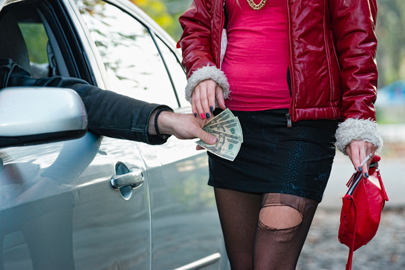
What Sex Work Really Looks Like
The popular image of sex work is a woman on a street corner. In reality, that is the smallest slice. Most paid sex today is arranged privately, online, or between acquaintances, not on the street. Sex work is a common form of income for many people. It’s difficult to accurately measure how many people engage in sex work, given that it’s illegal and secretive. Based on a mix of self-report and criminal records, it’s estimated that well over 1 million Americans are currently engaging in sex work at any given time (Dank et al., 2014)ReferenceDank, M., Khan, B., Downey, P. M., Kotonias, C., Mayer, D., Owens, C., Pacifici, L., & Yu, L. (2014). Estimating the size and structure of the underground commercial sex economy in eight major US cities. Urban Institute..
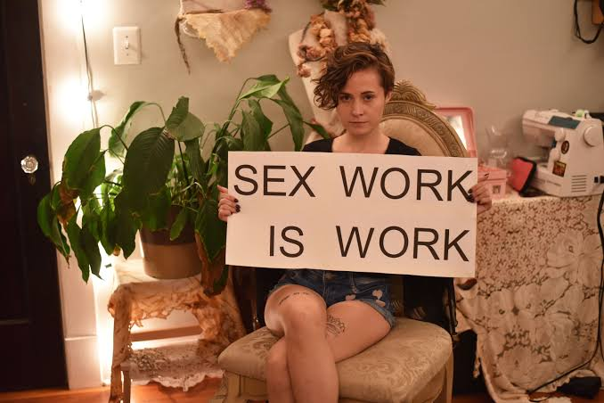
Large national surveys find that around 5% of Americans report engaging in sex work during adolescence or as young adults, with these being predominantly cis and trans women (Ulloa et al., 2016)ReferenceUlloa, E., Salazar, M., & Monjaras, L. (2016). Prevalence and correlates of sex exchange among a nationally representative sample of adolescents and young adults. Journal of Child Sexual Abuse, 25(5), 524–537.. College students are even more likely to engage in sex work, with around 10% of women college students “using their bodies” to pay for college tuition or cover emergency costs (Petter, 2018)ReferencePetter, O. (2018, July 17). More than 10% of students “use their bodies” to pay for university fees when facing emergency costs, study claims. The Independent.. For most sex workers, it’s a temporary gig. In one Canadian study that tracked online listings for sex workers, the average sex worker only listed their services for around 6 months (Kennedy, 2024)ReferenceKennedy, L. (2024). Estimating turnover and industry longevity of Canadian sex workers. PLoS ONE, 19(3), e0298523.. In most cases, sex workers only worked for 1 month out of the year.
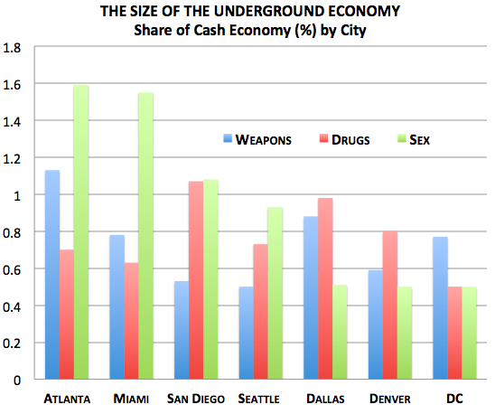
While it’s true that most sex workers are women, it’s becoming more common to see male sex workers enter the trade. A content analysis of over 25,000 sex-work ads found that 72% of sex workers identified as women, while 28% identified as men (Kingston & Smith, 2020)ReferenceKingston, S., & Smith, N. (2020). Sex counts: An examination of sexual service advertisements in a UK online directory. The British Journal of Sociology, 71(2), 328–348.. A majority of men in the sex trade sell their bodies to other men (Logan, 2010)ReferenceLogan, T. D. (2010). Personal characteristics, sexual behaviors, and male sex work. American Sociological Review, 75(5), 679–704.. Trans women are especially likely to enter the sex trade, with around 13% of trans women selling their bodies at some point, nearly three times the rate of cisgender women (Sawicki et al., 2019)ReferenceSawicki, D. A., Meffert, B. N., Read, K., & Heinz, A. J. (2019). Culturally competent health care for sex workers: An examination of myths that stigmatize sex work and hinder access to care. Sexual & Relationship Therapy, 34(3), 355–371.. Many trans women begin sex work as a way to make money in a world that rejects them for other jobs (Fitzgerald et al., 2015; Nuttbrock, 2018)ReferencesFitzgerald, E., Patterson, S. E., & Hickey, D. (2015). Meaningful work: Transgender experiences in the sex trade. National Center for Transgender Equality; Red Umbrella Project; Best Practices Policy Project.
Nuttbrock, L. (2018). Transgender sex work and society. Columbia University Press.. Trans women also face more danger in the sex trade, with clients sometimes becoming violent if they find out they’re having sex with a trans woman (Turner et al., 2021)ReferenceTurner, C. M., Arayasirikul, S., & Wilson, E. C. (2021). Disparities in HIV-related risk and socio-economic outcomes among trans women in the sex trade and effects of a targeted, anti-sex-trafficking policy. Social Science & Medicine, 270, 113664..
When it comes to male clientele (commonly known as JohnsJohnA common term for a customer who buys sex. Research finds buyers are not a single type, and that men with “fragile” masculine identities tend to pose more danger to workers than those simply seeking variety.View in glossary →), 1 in 8 U.S. men (around 13%) report having paid for sex at least once in their lives (Della Giusta et al., 2009)ReferenceDella Giusta, M., Di Tommaso, M. L., Shima, I., & Strøm, S. (2009). What money buys: Clients of street sex workers in the US. Applied Economics, 41(18), 2261–2277.. Men make up the vast majority of people who pay for sex, with far less than 1% of women reporting ever having paid for sex. This gender dynamic is as old as the sex trade itself. The famous Roman poet Ovid, writing around 20 BCE, put it this way: Woman alone glories in spoils stripped from a man, alone rents out her nights, alone comes up for hire, and sells what pleases them both and both were after, setting a price on her own enjoyment (lines 27–34). Throughout history, women have been the primary sellers of sex, and men the buyers.
Studies find that Johns often fall into one of two categories (Joseph & Black, 2012)ReferenceJoseph, L. J., & Black, P. (2012). Who’s the man? Fragile masculinities, consumer masculinities, and the profiles of sex work clients. Men and Masculinities, 15(5), 486–506.. One is the “consumer” type, who simply enjoys a variety of different types of sex with different types of partners. This constitutes the majority of men who pay for sex. The other type is termed the “fragile” man, someone who is uncomfortable around women, often from experiencing past rejections. They typically view themselves as unworthy of love or incapable of obtaining a regular sex partner. It is this “fragile” group that tends to be more dangerous to workers. For them, buying sex is often bound up with a wish to feel power and control over women, which can sometimes result in mistreatment.
Why is the street-corner image of sex work misleading?
Types of Sex Work
There are a number of ways that people sell sex, from street corners to massage parlors. These can vary greatly in the type of clientele, price per service, and the degree of safety for workers.
StreetwalkersStreetwalkerA sex worker who finds clients on the street. The lowest-paid and most dangerous form of sex work, because workers have little ability to screen clients, insist on protection, or safely contact police.View in glossary → — sex workers who find clients on the street — are the lowest-paid and by far the most endangered. They have to quickly establish trust and negotiate with clients and then direct the sexual encounter to a car or cheap hotel room, all while avoiding police (Burnes et al., 2018)ReferenceBurnes, T. R., Rojas, E. M., Delgado, I., & Watkins, T. E. (2018). “Wear some thick socks if you walk in my shoes”: Agency, resilience, and well-being in communities of North American sex workers. Archives of Sexual Behavior, 47(5), 1541–1550.. Every time a streetwalker gets into a stranger’s car, she risks being robbed, beaten, raped, or killed (Raphael & Shapiro, 2004)ReferenceRaphael, J., & Shapiro, D. L. (2004). Violence in indoor and outdoor prostitution venues. Violence Against Women, 10(2), 126–139.. Streetwalkers are around 20 times more likely to be murdered, compared to the typical woman (Salfati, 2009)ReferenceSalfati, C. G. (2009). Street prostitute homicide: An overview of the literature and a comparison to sexual and non-sexual female victim homicide. In M. Ioannou & D. Canter (Eds.), Safer sex in the city: The experience and management of street prostitution (pp. 51–68). Routledge..
Street-based workers have the least ability to insist on condoms, so their risk of sexually transmitted infection is also highest (Love, 2015)ReferenceLove, R. (2015). Street level prostitution: A systematic literature review. Issues in Mental Health Nursing, 36(8), 568–577.. Because criminalization means they often cannot safely go to the police, they are also easy targets for exploitation — sometimes by the police themselves (Footer et al., 2016)ReferenceFooter, K. H., Silberzahn, B. E., Tormohlen, K. N., & Sherman, S. G. (2016). Policing practices as a structural determinant for HIV among sex workers: A systematic review of empirical findings. Journal of the International AIDS Society, 19, 20883.. Street work is the smallest share of sex work overall, but it absorbs a large share of the danger, arrests, and stigma (Barwulor et al., 2021; Jones, 2015)ReferencesBarwulor, C., McDonald, A., Hargittai, E., & Redmiles, E. M. (2021). “Disadvantaged in the American-dominated internet”: Sex, work, and technology. Proceedings of the 2021 CHI Conference on Human Factors in Computing Systems, 1–16.
Jones, A. (2015). Sex work in a digital era. Sociology Compass, 9(7), 558–570.. Most often, people turn to street-based sex work because of homelessness, a drug addiction, or a past criminal record (Duff et al., 2011; Lankenau et al., 2005; Larroulet et al., 2022)ReferencesDuff, P., et al. (2011). Homelessness among a cohort of women in street-based sex work: The need for safer environment interventions. BMC Public Health, 11, 643.
Lankenau, S. E., Clatts, M. C., Welle, D., Goldsamt, L. A., & Gwadz, M. V. (2005). Street careers: Homelessness, drug use, and sex work among young men who have sex with men (YMSM). International Journal of Drug Policy, 16(1), 10–18.
Larroulet, P., Daza, S., & Bórquez, I. (2022). From prison to work? Job-crime patterns for women in a precarious labor market. Social Science Research, 110, 102844.. This makes streetwalkers especially vulnerable to victimization, crime, and health problems.
Streetwalkers sometimes work for pimpsPimpA person, usually a man, who manages and profits from sex workers. Research shows many function more like “business managers” than the violent stereotype, though abusive pimps and coercion in trafficking cases are real.View in glossary →, who are typically men who offer protection for sex workers for a price. So-called protection can come at a high price, with pimps often taking the majority of pay earned by sex workers. In a series of interviews with pimps across 8 U.S. cities, nearly all of them described themselves as “business managers,” rather than enforcers (Dank et al., 2014)ReferenceDank, M., Khan, B., Downey, P. M., Kotonias, C., Mayer, D., Owens, C., Pacifici, L., & Yu, L. (2014). Estimating the size and structure of the underground commercial sex economy in eight major US cities. Urban Institute.. Most of them handled advertising, travel, hotel stays, and appearances for their workers. At the same time, most also reported using force, fraud, or coercion to control their “ladies.” Pimps are also often in charge of recruiting new girls for the trade. A study from the Urban Institute found that pimps often roped in women from gang-affiliated families to do sex work (Thompson, 2014)ReferenceThompson, D. (2014, March 12). 8 facts about the U.S. sex economy. The Atlantic..
Brothels sit higher on the safety ladder. A brothelBrothelA house or business where sex is sold. Where they are legal and regulated, brothels tend to be safer than street-based work because of security, house rules, and clear limits on activity and protection.View in glossary → is a house where sex is sold, historically run by a madamMadamA woman who manages a brothel or a group of sex workers, usually taking a share of the earnings.View in glossary → — a woman who manages the workers and takes a share of the earnings (Howard, 2021)ReferenceHoward, C. (2021). Discovering vice to define virtue: Histories of sex work in the late nineteenth- and early twentieth-century United States. Journal of Urban History, 47(5), 1168–1174.. Where brothels are legal and regulated, they operate like any other business, with security, house rules, and clear limits on what activities occur and what protection is used. That structure makes indoor work considerably safer than the street, which is exactly why the few legal brothels in Nevada rarely see the violence and disease associated with street work.
Massage parlorsMassage ParlorA storefront business that advertises massages but may also offer sexual services; in the U.S. these are often staffed by immigrant women and sit in a legally and socially uncertain middle space in the sex trade.View in glossary → that offer sexual services sit in an odd middle space in the American sex trade. They look like ordinary storefronts, often operating in strip malls and office parks, and advertise “body massages.” Most often, the people working there are immigrant women from China and Korea. Chin and colleagues interviewed 116 Chinese and Korean women who provided sexual services in parlors in New York City and Los Angeles County (Chin & Takahashi, 2019, 2023)ReferencesChin, J. J., & Takahashi, L. M. (2019). Illicit massage parlors in Los Angeles County and New York City: Stories from women workers. Hunter College, City University of New York; University of Southern California.
Chin, J. J., & Takahashi, L. M. (2023). Illicit massage parlors. In R. Weitzer (Ed.), Sex for sale: Prostitution, pornography, and erotic dancing (3rd ed., pp. 279–303). Routledge.. Most said they had not been forced into the work, but few described it as a free choice either. About a third said they did the work out of necessity, a smaller share said they preferred it, and roughly half said both things were true. Many had limited English, no legal immigration status, and children to support, which left them choosing among nail salons, restaurants, or massage work. Massage work often paid the best. Working at a massage parlor still carries real danger. A substantial portion of the women reported being sexually assaulted by a customer in the past year. Fear of deportation kept most of them from going to the police (see also Young, 2021)ReferenceYoung, R. (2021, May 3). Would regulating massage parlors reduce violence against women, immigrants? Here & Now. WBUR..
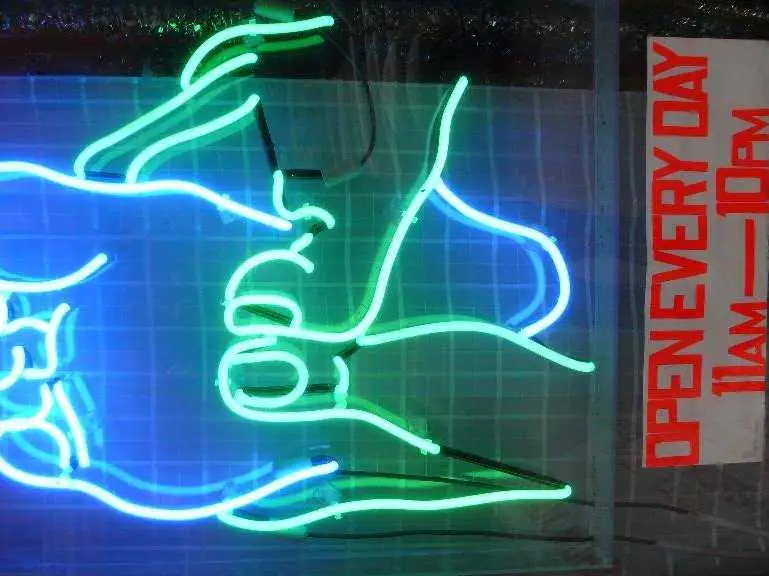
Escort services are the main form of sex work in the United States today. EscortsEscortA sex worker who arranges meetings privately, usually advertising online and traveling to a client or hosting at a chosen location. Escorts can screen clients and set terms in advance, which makes the work relatively safe and well-paid. Also called a call girl.View in glossary →, sometimes called call girlsCall GirlAnother name for an escort — a sex worker who arranges meetings privately, usually advertising online and traveling to a client or hosting at a chosen location.View in glossary →, advertise online and travel to a client, or receive the client at a chosen location. This model gives the worker much more control. She can set prices and limits in advance, screen clients, and pick the setting — all of which improve safety and lower the chance of arrest. Escorts tend to earn more and face less violence than street workers. Many build a base of regular clients, which makes the work steadier and safer. Online sex work has become so popular, in part, because it’s easy and cheap to get started. It simply involves taking pictures and paying for an online ad on a website. A survey of over 100 escorts found that this was one of the primary draws of sex work. It was much easier to start an online sex-work business than to get into another line of work, and the pay was typically higher than what other jobs would provide (Macon & Tai, 2022)ReferenceMacon, C., & Tai, E. (2022). Earning housing: Removing barriers to housing to improve the health and wellbeing of chronically homeless sex workers. Social Sciences, 11(9), 399..
In recent years, it’s become harder for people to engage in sex work online. In 2018, Congress passed a law usually called FOSTA-SESTA. It amended a law that had shielded websites from legal responsibility for what their users posted. The stated goal was to fight sex trafficking by making platforms liable if they hosted ads for commercial sex. Websites reacted fast, banning anything that looked like sex work. That included the tools workers had built to keep themselves safe, such as client-screening services and shared lists of dangerous clients. A sex-worker-led survey found that the law cut into people’s income and their ability to advertise while increasing their exposure to violence (Blunt & Wolf, 2020; see also Cunningham & Shah, 2018)ReferencesBlunt, D., & Wolf, A. (2020). Erased: The impact of FOSTA-SESTA and the removal of Backpage on sex workers. Anti-Trafficking Review, 14, 117–121.
Cunningham, S., & Shah, M. (2018). Decriminalizing indoor prostitution: Implications for sexual violence and public health. The Review of Economic Studies, 85(3), 1683–1715.. About 20% of respondents lost access to harm-reduction resources they had been using. Like so many laws passed to punish sex work, it simply worked to drive the trade deeper underground. Many websites that now host escort listings are overseas, which has actually made it more difficult to investigate sex trafficking (U.S. Government Accountability Office, 2021)ReferenceU.S. Government Accountability Office. (2021). Sex trafficking: Online platforms and federal prosecutions (GAO-21-385)..

Exotic dancingExotic DancingStripping or striptease performed for an audience, usually in a club; the most common legal, face-to-face form of sex work. Dancers earn mainly through tips and private dances.View in glossary →, or stripping, is the most common legal, face-to-face form of sex work. Dancers make most of their money from tips and private dances. While the club setting offers some protection, the job carries its own stigma and risks, including harassment and stalking by clients. Research finds that many dancers manage this by drawing a firm line between their stage persona and their real self, and by developing strategies to read and defuse dangerous situations (Thompson et al., 2003; Bahri, 2019)ReferencesThompson, W. E., Harred, J. L., & Burks, B. E. (2003). Managing the stigma of topless dancing: A decade later. Deviant Behavior, 24(6), 551–570.
Bahri, J. (2019). Boyfriends, lovers, and “peeler pounders”: Experiences of interpersonal violence and stigma in exotic dancers’ romantic relationships. Sexual and Relationship Therapy, 34(3), 309–328..
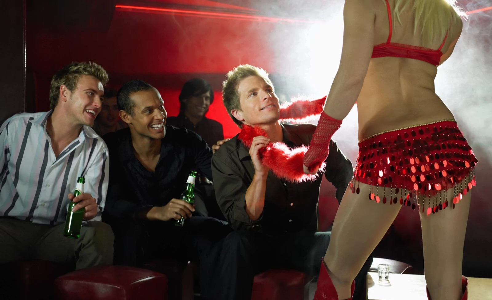
What best explains why indoor sex work tends to be safer than street work?
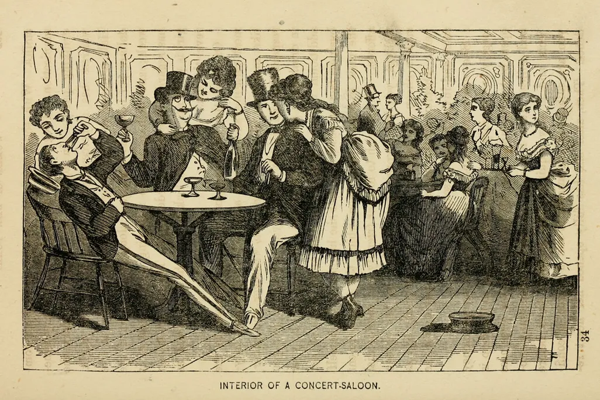
15.4 Sex Work and the Law
In the United States, a person can legally be paid to have sex on camera in front of strangers — that is making pornography and is protected as free speech — but the same person cannot legally be paid to have sex with a client in private. Selling the image of sex is legal; selling the act is not. Why?
Legal vs. Illegal Sex Work
The split is mostly a matter of legal history. Pornography won First Amendment protection through decades of court fights. Prostitution never got that shield. It has been treated solely as a vice that needs to be suppressed. Underneath the legal difference sits a moral one — the old idea that sex outside a committed relationship is wrong, and that paid sex is the worst version of it (Weitzer, 2020)ReferenceWeitzer, R. (2020). The campaign against sex work in the United States: A successful moral crusade. Sexuality Research and Social Policy, 17(3), 399–414..
There are three broad legal approaches when it comes to sex work. Under criminalizationCriminalizationA legal approach in which both buying and selling sex are crimes. It tends to push the trade underground and make it more dangerous for workers.View in glossary →, buying and selling sex are crimes. Under legalizationLegalizationA legal approach that permits sex work only under specific regulations, such as licensed brothels, mandatory health checks, or restricted zones. Different from decriminalization, which simply removes penalties.View in glossary →, sex work is allowed but tightly regulated — legal only under specific conditions such as licensed brothels, mandatory health checks, or restricted zones. Under decriminalizationDecriminalizationRemoving the criminal penalties for buying and selling sex, so that sex work is treated more like ordinary work, without a heavy system of regulation. Associated in research with improved worker safety.View in glossary →, the criminal penalties are simply removed, so that sex work is treated less like a crime and more like other work, without a heavy regulatory apparatus (American Civil Liberties Union, 2021)ReferenceAmerican Civil Liberties Union. (2021, June 8). It’s time to decriminalize sex work.. Legalization says “yes, but only like this,” while decriminalization says, “yes, and you decide how to do it.”
The reason this distinction matters is that the legal regime shapes how dangerous the work is. When sex work is criminalized, workers cannot easily call the police, insist their clients use condoms, or work together for safety. Criminalization pushes the trade into the shadows, which is precisely where it becomes most dangerous.
After New Zealand decriminalized sex work, research found workers were better able to protect themselves and had improved relationships with police (Armstrong, 2017)ReferenceArmstrong, L. (2017). From law enforcement to protection? Interactions between sex workers and police in a decriminalised street-based sex industry. British Journal of Criminology, 57(3), 570–588.. Conversely, where governments have leaned harder into punishing buyers and sellers, some studies find the trade did not shrink but grew more dangerous, as the clientele shifted toward men more willing to break the law (Della Giusta et al., 2021)ReferenceDella Giusta, M., Di Tommaso, M. L., Jewell, S., & Bettio, F. (2021). Quashing demand or changing clients? Evidence of criminalization of sex work in the United Kingdom. Southern Economic Journal, 88(2), 527–544.. Currently, the U.S. is split in its public opinion on sex work, with nearly half of Americans agreeing that “prostitution between consenting adults should be legal” (Heng-Lehtinen, 2020; Moore, 2015, 2016)ReferencesHeng-Lehtinen, R. (2020, January 30). New polls find that for first time, majority of country supports decriminalization of sex work [Press release]. National Center for Transgender Equality.
Moore, P. (2015, September 1). Country split on legalizing prostitution. YouGov.
Moore, P. (2016, March 10). Significant gender gap on legalizing prostitution. YouGov..
Why can a person legally be paid for sex on camera but not in private?
Sex Trafficking
Sex work is completely different from sex trafficking. While sex work involves consenting adults trading sex for money, sex traffickingSex TraffickingForcing or coercing someone into commercial sex, or trafficking a minor for sex. A serious crime, but far less common than public alarm often suggests.View in glossary → involves forcing someone to have sex, often involving minors. Concerns about trafficking have often been used to single out and “crack down” on sex work more broadly. In 2025, the U.S. Supreme Court upheld a Texas law requiring pornography sites to verify that their visitors are adults, which has made operating porn sites in the state virtually impossible (Free Speech Coalition, Inc. v. Paxton, 2025)ReferenceFree Speech Coalition, Inc. v. Paxton, 606 U.S. ___ (2025)..
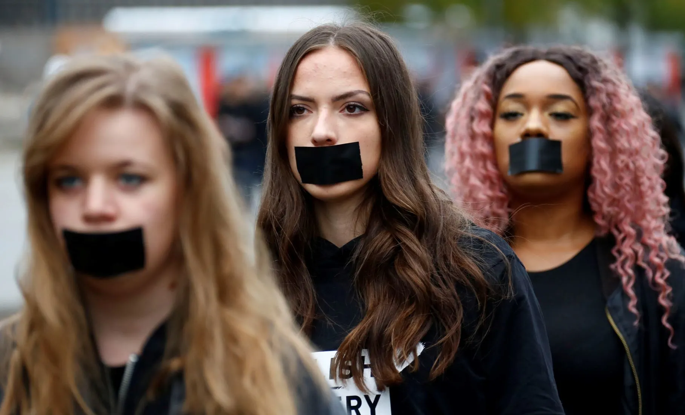
While sex trafficking is a real concern, it is far less common than lawmakers often make it out to be. Reliable national counts are extremely difficult to estimate, given that the practice is well guarded and highly illegal. However, out of the more than 80,000 arrests of sex workers in one year, only about 100 were related to trafficking (Human Trafficking Institute, 2022)ReferenceHuman Trafficking Institute. (2022). 2021 federal human trafficking report.. In other words, sex trafficking likely constitutes only an incredibly small percentage (less than 0.1%) of all sex work.
Measures sold as anti-trafficking tools also frequently sweep up consensual adult sex workers instead, or simply push the trade toward more dangerous channels (ProCon, 2024)ReferenceProCon. (2024, November 21). Prostitution: Pros, cons, debate, arguments, & sex workers. Encyclopedia Britannica.. A U.S. Government Accountability Office review found that FOSTA-SESTA was rarely used to prosecute traffickers, yet it shut down the advertising and client-screening sites many workers relied on for safety (U.S. Government Accountability Office, 2021)ReferenceU.S. Government Accountability Office. (2021). Sex trafficking: Online platforms and federal prosecutions (GAO-21-385).. As of 2026, most porn websites are no longer available in 25 U.S. states, including most of the Southern and Midwest states. Laws meant to stop trafficking have most likely had little effect on trafficking itself, but have made it much harder to safely access sex work and sexual media for much of the country.
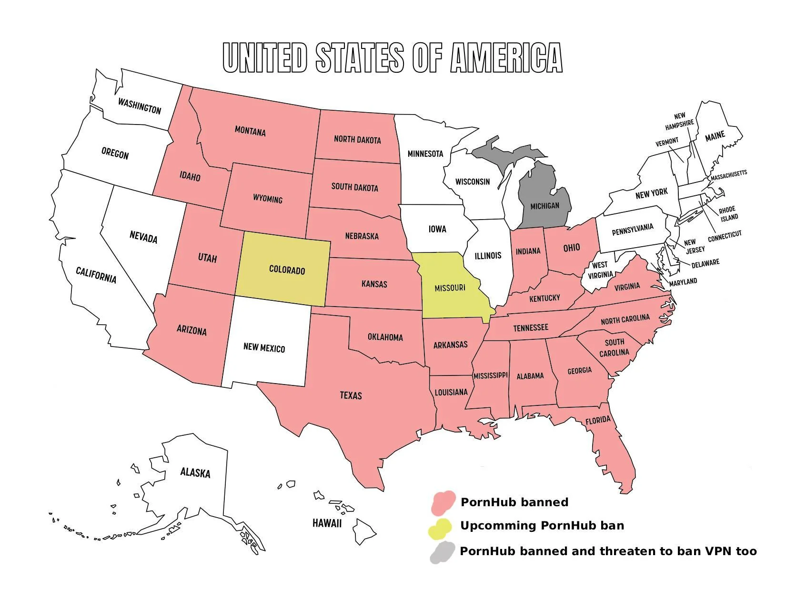
Which statement best fits the evidence on FOSTA-SESTA?
Study Guide
After reading this chapter, you should be able to answer each of the questions below. These are open-ended prompts for review and discussion; use your own words and support your answers with evidence from the text.
15.1 Pornography: What It Is and How It Is Made
- What is the difference between pornography and erotica, and why is the line between them so hard to draw?
- Explain the three parts of the Miller test for obscenity. Why does the phrase “community standards” make the test difficult to apply in the internet age?
- In what sense is pornography a “performance” rather than a documentary? Give three ways that porn differs from real-life sex.
- Describe how technology has changed the way pornography is produced and consumed, from print magazines to webcamming and subscription platforms.
- Why do most porn performers report low job satisfaction? Identify at least three factors.
15.2 The Effects of Pornography
- Describe the three profiles of porn users identified by researchers. Which group is the largest?
- Why do frequent male porn viewers sometimes report slightly lower sexual satisfaction? What role do expectations play?
- Explain why the claim “porn causes violence against women” is considered an overstatement. For whom is the effect actually strongest?
- What is problematic pornography use, and how does it differ from simply watching porn? Which direction does the evidence suggest the relationship with mental health runs?
- What predicts whether someone labels themselves a “porn addict” better than the amount they watch? What does this tell us about how beliefs shape experience?
- What is porn literacy, and why do many sexual-health educators recommend it?
15.3 Sex Work and Sex Workers
- Why do many researchers prefer the term “sex work” over “prostitution”?
- Why is the popular image of sex work — a woman on a street corner — misleading about what most sex work actually looks like?
- Rank streetwalking, brothel work, and escort work from most to least dangerous, and explain what drives the difference in safety.
- Why are transgender women overrepresented in sex work? What factors push some toward the trade?
- How does research on pimps and on the buyers of sex (“Johns”) complicate common stereotypes?
15.4 Sex Work and the Law
- Explain why making pornography is generally legal in the U.S. while prostitution generally is not.
- Distinguish among criminalization, legalization, and decriminalization. How does each affect the safety of sex workers?
- What does the evidence suggest about which legal arrangements keep sex workers safest, and why?
- Why should concern about sex trafficking be “kept in proportion,” and how can broad anti-trafficking measures sometimes harm consensual sex workers?
Key Terms
- Brothel
- A house or business where sex is sold. Where they are legal and regulated, brothels tend to be safer than street-based work because of security, house rules, and clear limits on activity and protection.
- Call Girl
- Another name for an escort — a sex worker who arranges meetings privately, usually advertising online and traveling to a client or hosting at a chosen location.
- Community Standards
- The idea, central to the Miller obscenity test, that whether material is “patently offensive” is judged by the norms of an average person in a particular community — norms that vary by place and time.
- Criminalization
- A legal approach in which both buying and selling sex are crimes. It tends to push the trade underground and make it more dangerous for workers.
- Decriminalization
- Removing the criminal penalties for buying and selling sex, so that sex work is treated more like ordinary work, without a heavy system of regulation. Associated in research with improved worker safety.
- Erotica
- Sexual material that also aims for artistic or literary value — telling a story or evoking feeling — rather than only prompting arousal. The line between erotica and pornography is largely a matter of opinion.
- Escort
- A sex worker who arranges meetings privately, usually advertising online and traveling to a client or hosting at a chosen location. Escorts can screen clients and set terms in advance, which makes the work relatively safe and well-paid. Also called a call girl.
- Exotic Dancing
- Stripping or striptease performed for an audience, usually in a club; the most common legal, face-to-face form of sex work. Dancers earn mainly through tips and private dances.
- John
- A common term for a customer who buys sex. Research finds buyers are not a single type, and that men with “fragile” masculine identities tend to pose more danger to workers than those simply seeking variety.
- Legalization
- A legal approach that permits sex work only under specific regulations, such as licensed brothels, mandatory health checks, or restricted zones. Different from decriminalization, which simply removes penalties.
- Madam
- A woman who manages a brothel or a group of sex workers, usually taking a share of the earnings.
- Massage Parlor
- A storefront business that advertises massages but may also offer sexual services; in the U.S. these are often staffed by immigrant women and sit in a legally and socially uncertain middle space in the sex trade.
- Miller Test
- The three-part U.S. Supreme Court standard (from Miller v. California, 1973) for deciding whether sexual material is legally obscene: it must appeal mainly to a shameful interest in sex, depict sexual conduct in a patently offensive way, and, taken as a whole, lack serious literary, artistic, political, or scientific value.
- Obscenity
- Sexual material judged so offensive that it falls outside the free-speech protection of the First Amendment. Very little adult pornography actually meets this legal definition.
- Pimp
- A person, usually a man, who manages and profits from sex workers. Research shows many function more like “business managers” than the violent stereotype, though abusive pimps and coercion in trafficking cases are real.
- Porn Literacy
- An educational approach that teaches young people to view pornography critically: as staged fantasy with unrealistic bodies and scripts that leave out communication, consent, and protection.
- Pornography
- Media — photographs, video, writing, drawing, painting, or sculpture — created mainly to cause sexual arousal.
- Problematic Pornography Use
- A pattern of porn use that a person feels is out of their control and that interferes with their life. Evidence suggests distress and poor mental health more often drive heavy use than the reverse.
- Prostitution
- The exchange of sexual acts for money; the older term for what many now call sex work.
- Sex Trade
- The overall industry built around sex work.
- Sex Trafficking
- Forcing or coercing someone into commercial sex, or trafficking a minor for sex. A serious crime, but far less common than public alarm often suggests.
- Sex Work
- The exchange of sexual activities or performances for money or goods. Many researchers prefer this term over “prostitution” because it frames the activity as labor and carries less stigma.
- Streetwalker
- A sex worker who finds clients on the street. The lowest-paid and most dangerous form of sex work, because workers have little ability to screen clients, insist on protection, or safely contact police.
- Webcamming
- Performing sex acts live on camera for paying viewers over the internet — a form of work that sits between pornography and in-person sex work.
References
- Alilunas, P. (2016). Smutty little movies: The creation and regulation of adult video. University of California Press.
- American Civil Liberties Union. (2021, June 8). It’s time to decriminalize sex work.
- Armstrong, L. (2017). From law enforcement to protection? Interactions between sex workers and police in a decriminalised street-based sex industry. British Journal of Criminology, 57(3), 570–588.
- Bahri, J. (2019). Boyfriends, lovers, and “peeler pounders”: Experiences of interpersonal violence and stigma in exotic dancers’ romantic relationships. Sexual and Relationship Therapy, 34(3), 309–328.
- Barwulor, C., McDonald, A., Hargittai, E., & Redmiles, E. M. (2021). “Disadvantaged in the American-dominated internet”: Sex, work, and technology. Proceedings of the 2021 CHI Conference on Human Factors in Computing Systems, 1–16.
- Blunt, D., & Wolf, A. (2020). Erased: The impact of FOSTA-SESTA and the removal of Backpage on sex workers. Anti-Trafficking Review, 14, 117–121.
- Bridges, A. J., Wosnitzer, R., Scharrer, E., Sun, C., & Liberman, R. (2010). Aggression and sexual behavior in best-selling pornography videos: A content analysis update. Violence Against Women, 16(10), 1065–1085.
- Burnes, T. R., Rojas, E. M., Delgado, I., & Watkins, T. E. (2018). “Wear some thick socks if you walk in my shoes”: Agency, resilience, and well-being in communities of North American sex workers. Archives of Sexual Behavior, 47(5), 1541–1550.
- Butler, A. M. (1985). Daughters of joy, sisters of misery: Prostitutes in the American West, 1865–90. University of Illinois Press.
- Chin, J. J., & Takahashi, L. M. (2019). Illicit massage parlors in Los Angeles County and New York City: Stories from women workers. Hunter College, City University of New York; University of Southern California.
- Chin, J. J., & Takahashi, L. M. (2023). Illicit massage parlors. In R. Weitzer (Ed.), Sex for sale: Prostitution, pornography, and erotic dancing (3rd ed., pp. 279–303). Routledge.
- CNBC.com. (2015, January 20). Things are looking up in America’s porn industry.
- Comstock Act, ch. 258, 17 Stat. 598 (1873).
- Cunningham, S., & Shah, M. (2018). Decriminalizing indoor prostitution: Implications for sexual violence and public health. The Review of Economic Studies, 85(3), 1683–1715.
- Dank, M., Khan, B., Downey, P. M., Kotonias, C., Mayer, D., Owens, C., Pacifici, L., & Yu, L. (2014). Estimating the size and structure of the underground commercial sex economy in eight major US cities. Urban Institute.
- Dawson, K., Noone, C., Gabhainn, S. N., & MacNeela, P. (2020). Using vignette methodology to study comfort with consensual and nonconsensual depictions of pornography content. Psychology and Sexuality, 11(4), 293–314.
- Della Giusta, M., Di Tommaso, M. L., Jewell, S., & Bettio, F. (2021). Quashing demand or changing clients? Evidence of criminalization of sex work in the United Kingdom. Southern Economic Journal, 88(2), 527–544.
- Della Giusta, M., Di Tommaso, M. L., Shima, I., & Strøm, S. (2009). What money buys: Clients of street sex workers in the US. Applied Economics, 41(18), 2261–2277.
- Diamond, M. (2009). Pornography, public acceptance and sex related crime: A review. International Journal of Law and Psychiatry, 32(5), 304–314.
- Diamond, M., Jozifkova, E., & Weiss, P. (2011). Pornography and sex crimes in the Czech Republic. Archives of Sexual Behavior, 40(5), 1037–1043.
- Dines, G. (2011). Pornland: How porn has hijacked our sexuality (1st ed.). Beacon Press.
- Donevan, M., Svedin, C. G., Dennhag, I., & Jonsson, L. S. (2025). Behind the illusion: Unmasking the coercion in pornography production. Violence Against Women, 32(2), 593–618.
- Duff, P., et al. (2011). Homelessness among a cohort of women in street-based sex work: The need for safer environment interventions. BMC Public Health, 11, 643.
- Dwulit, A. D., & Rzymski, P. (2019). Prevalence, patterns and self-perceived effects of pornography consumption in Polish university students: A cross-sectional study. International Journal of Environmental Research and Public Health, 16(10), 1861.
- Fitzgerald, E., Patterson, S. E., & Hickey, D. (2015). Meaningful work: Transgender experiences in the sex trade. National Center for Transgender Equality; Red Umbrella Project; Best Practices Policy Project.
- Footer, K. H., Silberzahn, B. E., Tormohlen, K. N., & Sherman, S. G. (2016). Policing practices as a structural determinant for HIV among sex workers: A systematic review of empirical findings. Journal of the International AIDS Society, 19, 20883.
- Footer, K. H., White, R. H., Park, J. N., Decker, M. R., Lutnick, A., & Sherman, S. G. (2020). Entry to sex trade and long-term vulnerabilities of female sex workers who enter the sex trade before the age of eighteen. Journal of Urban Health, 97(3), 406–417.
- Free Speech Coalition, Inc. v. Paxton, 606 U.S. ___ (2025).
- Fritz, N., Malic, V., Paul, B., & Zhou, Y. (2020). A descriptive analysis of the types, targets, and relative frequency of aggression in mainstream pornography. Archives of Sexual Behavior, 49(8), 3041–3053.
- Gilfoyle, T. J. (1992). City of Eros: New York City, prostitution, and the commercialization of sex, 1790–1920. W. W. Norton.
- Goldstein, B. Y., Steinberg, J. K., Aynalem, G., & Kerndt, P. R. (2011). High chlamydia and gonorrhea incidence and reinfection among performers in the adult film industry. Sexually Transmitted Diseases, 38(7), 644–648.
- Griffith, J. D., Mitchell, S., Hart, C. L., Adams, L. T., & Gu, L. L. (2013). Pornography actresses: An assessment of the damaged goods hypothesis. The Journal of Sex Research, 50(7), 621–632.
- Grubbs, J. B., Exline, J. J., Pargament, K. I., Hook, J. N., & Carlisle, R. D. (2015). Transgression as addiction: Religiosity and moral disapproval as predictors of perceived addiction to pornography. Archives of Sexual Behavior, 44(1), 125–136.
- Grudzen, C. R., Meeker, D., Torres, J. M., Du, Q., Morrison, R. S., Andersen, R. M., & Gelberg, L. (2011). Comparison of the mental health of female adult film performers and other young women in California. Psychiatric Services, 62(6), 639–645.
- Hald, G. M., & Malamuth, N. M. (2008). Self-perceived effects of pornography consumption. Archives of Sexual Behavior, 37(4), 614–625.
- Hald, G. M., & Malamuth, N. M. (2015). Experimental effects of exposure to pornography: The moderating effect of personality and mediating effect of sexual arousal. Archives of Sexual Behavior, 44(1), 99–109.
- Hald, G. M., Malamuth, N. M., & Yuen, C. (2010). Pornography and attitudes supporting violence against women: Revisiting the relationship in nonexperimental studies. Aggressive Behavior, 36(1), 14–20.
- Heng-Lehtinen, R. (2020, January 30). New polls find that for first time, majority of country supports decriminalization of sex work [Press release]. National Center for Transgender Equality.
- Herbenick, D., Fu, T., Wright, P., Paul, B., Gradus, R., Bauer, J., & Jones, R. (2020). Diverse sexual behaviors and pornography use: Findings from a nationally representative probability survey of Americans aged 18 to 60 years. The Journal of Sexual Medicine, 17(4), 623–633.
- Howard, C. (2021). Discovering vice to define virtue: Histories of sex work in the late nineteenth- and early twentieth-century United States. Journal of Urban History, 47(5), 1168–1174.
- Human Trafficking Institute. (2022). 2021 federal human trafficking report.
- Jacobellis v. Ohio, 378 U.S. 184 (1964).
- Jankowiak, W. R., Volsche, S. L., & Garcia, J. R. (2015). Is the romantic–sexual kiss a near human universal? American Anthropologist, 117(3), 535–539.
- Javanbakht, M., Dillavou, M. C., Rigg, R. W., Jr., Gorbach, P. M., & Kerndt, P. (2017). Transmission behaviors and prevalence of chlamydia and gonorrhea among adult film performers. Sexually Transmitted Diseases, 44(3), 181–186.
- Jones, A. (2015). Sex work in a digital era. Sociology Compass, 9(7), 558–570.
- Joseph, L. J., & Black, P. (2012). Who’s the man? Fragile masculinities, consumer masculinities, and the profiles of sex work clients. Men and Masculinities, 15(5), 486–506.
- Kennedy, L. (2024). Estimating turnover and industry longevity of Canadian sex workers. PLoS ONE, 19(3), e0298523.
- Kingston, D. A., Malamuth, N. M., Fedoroff, P., & Marshall, W. L. (2009). The importance of individual differences in pornography use: Theoretical perspectives and implications for treating sexual offenders. Journal of Sex Research, 46(2–3), 216–232.
- Kingston, S., & Smith, N. (2020). Sex counts: An examination of sexual service advertisements in a UK online directory. The British Journal of Sociology, 71(2), 328–348.
- Kohut, T., Balzarini, R. N., Fisher, W. A., & Campbell, L. (2018). Pornography’s associations with open sexual communication and relationship closeness vary as a function of dyadic patterns of pornography use within heterosexual relationships. Journal of Social and Personal Relationships, 35(4), 655–676.
- Koletić, G. (2017). Longitudinal associations between the use of sexually explicit material and adolescents’ attitudes and behaviors: A narrative review of studies. Journal of Adolescence, 57(1), 119–133.
- Kuan, H. T., Senn, C. Y., & Garcia, D. M. (2022). The role of discrepancies between online pornography-created ideals and actual sexual relationships in heterosexual men’s sexual satisfaction and well-being. SAGE Open, 12(3).
- Lankenau, S. E., Clatts, M. C., Welle, D., Goldsamt, L. A., & Gwadz, M. V. (2005). Street careers: Homelessness, drug use, and sex work among young men who have sex with men (YMSM). International Journal of Drug Policy, 16(1), 10–18.
- Larroulet, P., Daza, S., & Bórquez, I. (2022). From prison to work? Job-crime patterns for women in a precarious labor market. Social Science Research, 110, 102844.
- Leonhardt, N. D., Willoughby, B. J., Young-Petersen, B., & Leonhardt, D. (2018). Exploring trajectories of pornography use through adolescence and emerging adulthood. Journal of Sex Research, 55(3), 297–309.
- Ley, D., Prause, N., & Finn, P. (2014). The emperor has no clothes: A review of the “pornography addiction” model. Current Sexual Health Reports, 6(2), 94–105.
- Logan, T. D. (2010). Personal characteristics, sexual behaviors, and male sex work. American Sociological Review, 75(5), 679–704.
- Love, R. (2015). Street level prostitution: A systematic literature review. Issues in Mental Health Nursing, 36(8), 568–577.
- Macon, C., & Tai, E. (2022). Earning housing: Removing barriers to housing to improve the health and wellbeing of chronically homeless sex workers. Social Sciences, 11(9), 399.
- Maddox, A. M., Rhoades, G. K., & Markman, H. J. (2009). Viewing sexually-explicit materials alone or together: Associations with relationship quality. Archives of Sexual Behavior, 40(2), 441–448.
- Miller v. California, 413 U.S. 15 (1973).
- Moore, P. (2015, September 1). Country split on legalizing prostitution. YouGov.
- Moore, P. (2016, March 10). Significant gender gap on legalizing prostitution. YouGov.
- Morris, C. (2016, January 21). Porn’s dirtiest secret: What everyone gets paid. CNBC.
- Morris, S. (2020, July 23). What is OnlyFans, who uses it and how does it work? Newsweek.
- Nichols, A. J., & Nichols, A. (2017). Sex trafficking in the United States. Columbia University Press.
- Nuttbrock, L. (2018). Transgender sex work and society. Columbia University Press.
- Pathmendra, P., Raggatt, M., Lim, M. S. C., Marino, J. L., & Skinner, S. R. (2023). Exposure to pornography and adolescent sexual behavior: Systematic review. Journal of Medical Internet Research, 25, e43116.
- Perry, S. L. (2017). Does viewing pornography reduce marital quality over time? Evidence from longitudinal data. Archives of Sexual Behavior, 46(2), 549–559.
- Petter, O. (2018, July 17). More than 10% of students “use their bodies” to pay for university fees when facing emergency costs, study claims. The Independent.
- Pliley, J. R. (2014). Policing sexuality: The Mann Act and the making of the FBI. Harvard University Press.
- Poulsen, F. O., Busby, D. M., & Galovan, A. M. (2013). Pornography use: Who uses it and how it is associated with couple outcomes. Journal of Sex Research, 50(1), 72–83.
- ProCon. (2024, November 21). Prostitution: Pros, cons, debate, arguments, & sex workers. Encyclopedia Britannica.
- Rabouin, D. (2016, January 16). Camming gives internet porn fans a personal touch. Newsweek.
- Raphael, J., & Shapiro, D. L. (2004). Violence in indoor and outdoor prostitution venues. Violence Against Women, 10(2), 126–139.
- Rodrigues, D. L., Lopes, D., Dawson, K., de Visser, R., & Štulhofer, A. (2021). With or without you: Associations between frequency of internet pornography use and sexual relationship outcomes for (non)consensual (non)monogamous individuals. Archives of Sexual Behavior, 50(4), 1491–1504.
- Rodriguez-Hart, C., Chitale, R. A., Rigg, R., Goldstein, B. Y., Kerndt, P. R., & Tavrow, P. (2012). Sexually transmitted infection testing of adult film performers: Is disease being missed? Sexually Transmitted Diseases, 39(12), 989–994.
- Salfati, C. G. (2009). Street prostitute homicide: An overview of the literature and a comparison to sexual and non-sexual female victim homicide. In M. Ioannou & D. Canter (Eds.), Safer sex in the city: The experience and management of street prostitution (pp. 51–68). Routledge.
- Sawicki, D. A., Meffert, B. N., Read, K., & Heinz, A. J. (2019). Culturally competent health care for sex workers: An examination of myths that stigmatize sex work and hinder access to care. Sexual & Relationship Therapy, 34(3), 355–371.
- S.C.R. 9, Concurrent Resolution on the Public Health Crisis, 2016 Gen. Sess. (Utah 2016).
- Shor, E., & Seida, K. (2019). “Harder and harder”? Is mainstream pornography becoming increasingly violent and do viewers prefer violent content? The Journal of Sex Research, 56(1), 16–28.
- Skorska, M. N., Hodson, G., & Hoffarth, M. R. (2018). Experimental effects of degrading versus erotic pornography exposure in men on reactions toward women (objectification, sexism, discrimination). The Canadian Journal of Human Sexuality, 27(3), 261–276.
- Solano, I., Eaton, N. R., & O’Leary, K. D. (2020). Pornography consumption, modality and function in a large internet sample. The Journal of Sex Research, 57(1), 92–103.
- Thompson, D. (2014, March 12). 8 facts about the U.S. sex economy. The Atlantic.
- Thompson, W. E., Harred, J. L., & Burks, B. E. (2003). Managing the stigma of topless dancing: A decade later. Deviant Behavior, 24(6), 551–570.
- Turner, C. M., Arayasirikul, S., & Wilson, E. C. (2021). Disparities in HIV-related risk and socio-economic outcomes among trans women in the sex trade and effects of a targeted, anti-sex-trafficking policy. Social Science & Medicine, 270, 113664.
- Ulloa, E., Salazar, M., & Monjaras, L. (2016). Prevalence and correlates of sex exchange among a nationally representative sample of adolescents and young adults. Journal of Child Sexual Abuse, 25(5), 524–537.
- United States v. One Book Called “Ulysses,” 5 F. Supp. 182 (S.D.N.Y. 1933).
- U.S. Government Accountability Office. (2021). Sex trafficking: Online platforms and federal prosecutions (GAO-21-385).
- Vaillancourt-Morel, M.-P., Blais-Lecours, S., Labadie, C., Bergeron, S., Sabourin, S., & Godbout, N. (2017). Profiles of cyberpornography use and sexual well-being in adults. The Journal of Sexual Medicine, 14(1), 78–85.
- Weitzer, R. (2020). The campaign against sex work in the United States: A successful moral crusade. Sexuality Research and Social Policy, 17(3), 399–414.
- Willis, M., Canan, S. N., Jozkowski, K. N., & Bridges, A. J. (2020). Sexual consent communication in best-selling pornography films: A content analysis. The Journal of Sex Research, 57(1), 52–63.
- Young, R. (2021, May 3). Would regulating massage parlors reduce violence against women, immigrants? Here & Now. WBUR.